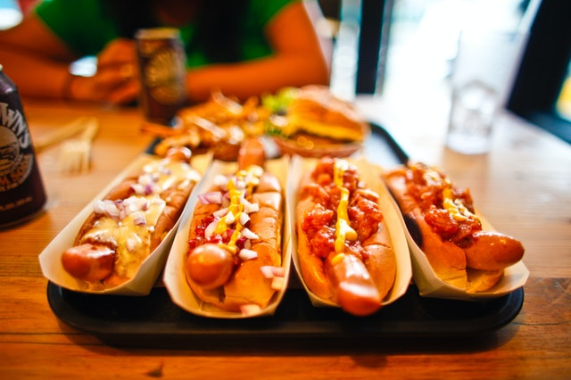

Home
Hot Dog and Onions

Tasty Hot Dogs
This does involve using a frying pan for the chopped onions but one saving grace is that you can buy the
onions
already chopped. At i can in my local super market, your mileage may vary. I recommend you delay
watching your
Netflix movie until after cooking.
Ingredients
- Hot dog sausages
- Chopped onions
- Table spoon of cooking oil
- Hot dog rolls
- Tomato ketchup and/or Mustard or not
Method
- Fry onions in frying pan until soft, careful not to burn them.
- Place hot dog sausages in microwave oven for required amount of time. (See packaging on hot dog
sausages for
instructions)
- When hot sausages are cooked, place them in the hot dog rolls.
- Top with onions
- Add Ketchup and Mustard to taste or not
- Retire to the living room with your Hot dogs. Relax and enjoy your Netflix movie and food.
All images courtesy of www.pexels.com